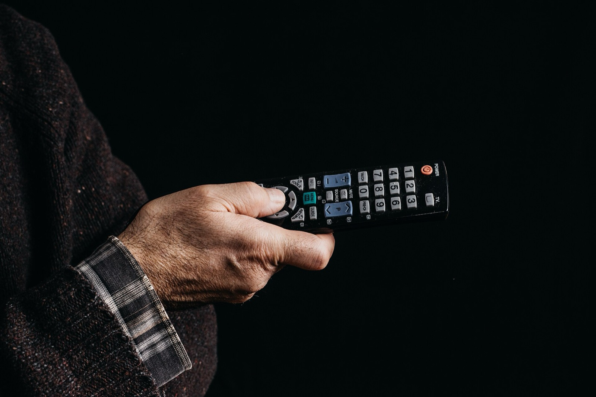

Guida
Orari WWE su Netflix in Italia (e il cambio dell'ora di fine ottobre)
Raw e SmackDown su Netflix partono alle 2:00 di notte, ora italiana. Ma dal 25 ottobre al 1° novembre 2026, per il cambio dell'ora sfasato tra Europa e USA, iniziano alle 1:00. Ecco la tabella.

In breve: su Netflix Raw va in onda nella notte tra lunedì e martedì e SmackDown nella notte tra venerdì e sabato, dalle 2:00 ora italiana. Ma dal 25 ottobre al 1° novembre 2026 iniziano alle 1:00, perché l'Italia torna all'ora solare una settimana prima degli Stati Uniti.
Gli orari normali
| Show | Notte | Ora italiana |
|---|---|---|
| Raw | tra lunedì e martedì | 2:00 |
| SmackDown | tra venerdì e sabato | 2:00 |
| NXT | tra martedì e mercoledì | da confermare |
Gli orari di Raw e SmackDown sono quelli comunicati da Netflix al lancio. Per NXT Netflix non ha indicato un orario nel comunicato: controlla la scheda dello show nell'app.
Il cambio dell'ora: la settimana "sfasata"
Gli show americani partono sempre alla stessa ora sulla costa est degli Stati Uniti. In Italia invece l'orario dipende dalla differenza di fuso, che per una settimana cambia:
- domenica 25 ottobre 2026 l'Italia torna all'ora solare (alle 3:00 le lancette tornano alle 2:00);
- domenica 1 novembre 2026 finisce l'ora legale negli Stati Uniti.
Tra queste due date la differenza tra Italia e costa est scende da 6 a 5 ore. Risultato: gli show iniziano un'ora prima del solito.
| Show | Data (notte) | Ora italiana |
|---|---|---|
| SmackDown | venerdì 23 → sabato 24 ottobre | 2:00 (ancora normale) |
| Raw | lunedì 26 → martedì 27 ottobre | 1:00 |
| NXT | martedì 27 → mercoledì 28 ottobre | da confermare |
| SmackDown | venerdì 30 → sabato 31 ottobre | 1:00 |
| Raw | lunedì 2 → martedì 3 novembre | 2:00 (si torna alla normalità) |
Gli orari della settimana del 26 ottobre sono calcolati dal cambio dell'ora, non annunciati da Netflix: prima di puntare la sveglia controlla la scheda dello show nell'app. Puntate speciali o show registrati fuori dagli Stati Uniti possono avere orari diversi.
Gli orari dei grandi eventi di novembre
| Evento | Data | Ora italiana |
|---|---|---|
| Crown Jewel 2026 | sabato 7 novembre | 18:00 (mezzogiorno ET secondo WWE.com; alcune testate riportano le 20:00: da confermare) |
| Survivor Series 2026: WarGames | notte tra sabato 28 e domenica 29 novembre | 00:00 (le 18:00 ET secondo WWE.com) |
Dove si vedono
Tutto su Netflix, con il commento in italiano di Luca Franchini e Michele Posa. I dettagli sono nella guida Dove vedere la WWE in Italia.
Domande frequenti
A che ora c'è Raw su Netflix in Italia?
Nella notte tra lunedì e martedì, dalle 2:00 ora italiana. Nella settimana del cambio dell'ora (Raw del 26 ottobre 2026) inizia alle 1:00.
A che ora c'è SmackDown su Netflix in Italia?
Nella notte tra venerdì e sabato, dalle 2:00 ora italiana. SmackDown del 30 ottobre 2026 inizia alle 1:00 di sabato 31.
Quando cambia l'ora nel 2026?
In Italia si torna all'ora solare domenica 25 ottobre 2026 (alle 3:00 le lancette tornano alle 2:00). Negli Stati Uniti l'ora legale finisce domenica 1 novembre 2026.
Perché per una settimana la WWE inizia un'ora prima?
Perché l'Italia torna all'ora solare una settimana prima degli Stati Uniti. Gli show americani partono sempre alla stessa ora locale, quindi tra il 25 ottobre e il 1° novembre la differenza di fuso scende da 6 a 5 ore.
Fonti
Controllate il 14 ottobre 2026. Se trovi un dato cambiato, scrivimelo sui social.
- Netflix Newsroom, annuncio WWE su Netflix in Italia con gli orari di lancio (1 aprile 2026)
- Sky TG24, "Ora solare 2026, quando torna" (8 settembre 2026)
- ABC7 New York, "Daylight saving time 2026 ending: when to fall back"
- WWE.com, pagina ufficiale Crown Jewel (orario di inizio)
- WWE.com, pagina ufficiale Survivor Series WarGames 2026 (orario di inizio)